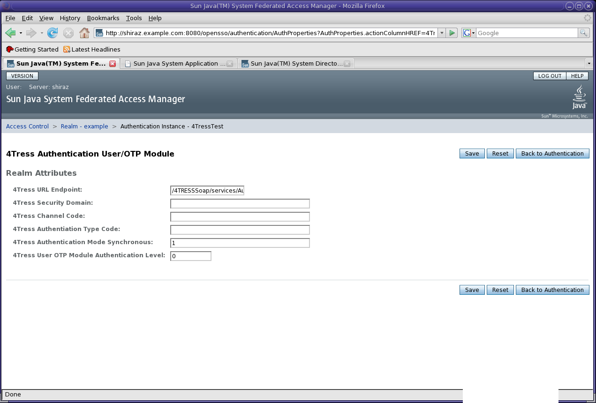

Installation and Configuration
Guide for the 4Tress OTP Authentication Module OpenSSO Extension.
Introduction
This document covers how to install and configure the 4Tress OTP
Authentication Module into an existing OpenSSO deployment.
4Tress Authentication Module
Components
The module has the following components:
1. The 4TressAuthModule.jar under the lib directory of this OpenSSO
extension.
2. A set of locale .properties files with prefix,
'amAuthFortressUserOTP'.
3. A Module Properties XML file, FortressAuthUserOTPModule.xml that
specifies the JAAS Callbacks.
4. A Service Configuration file for the module,
amAuthFortressAuthUserOTP.xml. This is used to register the service
into OpenSSO.
Software Requirements
OpenSSO deployed on a Java-based web container e.g. Glassfish.
Java SE 1.4.2 or above.
Apache Axis 1.2 Library files - axis.jar, commons-discovery-0.2.jar,
commons-logging-1.0.4.jar, wsdl4j-1.5.1.jar and log4j-1.2.8.jar.
Installation Steps
1. Install the 4TressAuthModule code into OpenSSO. You can either
checkout the code, build and package the source files as a library file
using the build.xml included or use the
pre-compiled jar file under lib
directory. Place the jar file and all the Apache Axis 1.2 files
mentioned in Software Requirements in the
<OPENSSO_HOME>/WEB-INF/lib directory of the opensso war file.
2. Place the FortressAuthUserOTPModule.xml under the
<OPENSSO_HOME>/config/auth/default directory
3. Place the local .properties files in the
<OPENSSO_HOME>/WEB-INF/classes directory.
4. Next load the configuration file into OpenSSO deployment. This
requires that you have installed the FAM tools:
<FAM_TOOLS_HOME>/bin/famadm create-service -X
amAuthFortressAuthUserOTP.xml -u <ADMIN_USER> -f <PWD_FILE>.
5. Next register the module as a valid authenticator for the opensso
deployment. A sample data file, FortressAuthnRegistration
can be found under the config directory.
<FAM_TOOLS_HOME>/bin/famadm add-attribute-defaults -s
iPlanetAMAuthService -t Global -u <ADMIN_USER> -f
<PASS_FILE> -D FortressAuthnRegistration
6. Restart the web container hosting Access Manager.
Configuration Steps
If all has been installed successfully, then once you log into the
OpenSSO Web console using the administration credentials, you should
see 4Tress/OTP Authentication Module
listed under Authentication Section of the global configuration tab.
In order to configure the module against a 4Tress Server deployment do
the following:
Under the Access Control tab, click on the realm that has the 4Tress
module service installed. You will then see a page with tabs.
Click on the 'Authentication' tab. Go to the section under Modules and
click the 'New...' button. You will be presented with a form to enter a
name for the module instance and click on the radio button for
4Tress/OTP Authentication Module. Click 'Finish'. You will be returned
to the Authentication tab. Click on the reference to the module
instance you just created. The page
should look be similar to screenshot below.
All configuration parameters are required in order for the
authentication module to work.
The configuration parameters required to connect with a 4Tress
Authentication Server deployment are documented below. The references
to the demonstration 4Tress deployment are related to the 4Tress
On-line service which is described later in this section.
4Tress URL Endpoint points to
the
web service endpoint for the 4Tress Authenticator 1.1 Web Service. The
format of the URL is expected to be:
http://<4TRESS_HOST>:<4TRESS_PORT>/4TRESSSoap/services/Authenticator-11
4Tress Channel Code refers to
the service channel that the end user is using to interact with the
organisation. For example, if OpenSSO is being used to protect access
to an internet banking site then the channel would be 'Internet Banking'. For the
demonstration, a generic channel representing
the Web is used. (CH_WEB). Non web channels might include IVR or Call
Centre Agent. 4TRESS enables the configuration of authentication policies
specific to particular channels.
4Tress Authentication Type Code
is a reference to an authentication type configured on a 4Tress
Server. Examples of different Authentication Types could be 'One Time
Password' or 'Static password'. For the demo a code of 'DYNMC_AUTH' is used. This
instructs the 4TRESS server to dynamically select the correct
authentication type based on the end user's profile. Hence the demo is
able to support authentication using either a staticpasssword or a one time
password.
4Tress Authentication Mode Synchronous
is applicable only to authentication types that use a one time
password. There are two modes:1(=SYNCHRONOUS) and 2 (=ASYNCHRONOUS). In
synchronous authentication the OTP
is generated based on variables such as (time or a counter) which are synchronised between the
physical device (i.e. token) and the authentication server. In
asynchronous mode the OTP is generated as a function of a challenge
issued by the server. The challenge may also be a parameter of a transaction,
enabling a simple transaction signing mechanism. 4TRESS supports both
synchronous and asynchronous authentication.
For the purpose of the demo, the value 1(=SYNCHRONOUS) should be used.
Within a single 4TRESS
deployment it is possible to support multiple
concurrent configurations, each with its own discrete set of user
credentials and audit logs. Each configuration is referred to as a
Security
domain. The demo is set up with only a single domain called 'DOMAIN1',
hence 4Tress Security Domain
should have a value of DOMAIN1
The last
configuration parameter, 4Tress User
OTP Module Authentication Level is relevant for OpenSSO only.
It indicates what
authentication level you wish to set for this module instance. The
Authentication level can be used in OpenSSO policy conditions. Usually
a 'stronger' authentication scheme is assigned a high numeric value.
ActivIdentity
provides an online service that you may use to evaluate the Sun OpenSSO
integration with ActivIdentity 4TRESS Authentication Server. In
such case make sure your platform has access to Internet, then you can
use the following settings:
You will have to log out of AM as the administrator before you can test
the login module.
To test the login Module, use the URL
http://<FAM_HOST>:<FAM_PORT>/opensso/UI/Login?module=<MODULE_NAME>.
You should see the following login page:
If you use ActivIdentity 4TRESS Online service you can use the
following credentials to test user authentication:
Username: CUSTOMER
Password: OpenSSO
You may want to
evaluate Sun Access Manager authentication using Strong Authentication.
Send an email to OpenSSO@ActivIdentity with the following information:
Company
First Name
Last Name
Email
Telephone
Country
ActivIdentity will
provide you a personal user account and a list of One Time Passwords.
You may use these pre-generated One Time Password to have an overview
of the end user experience and the associated security.